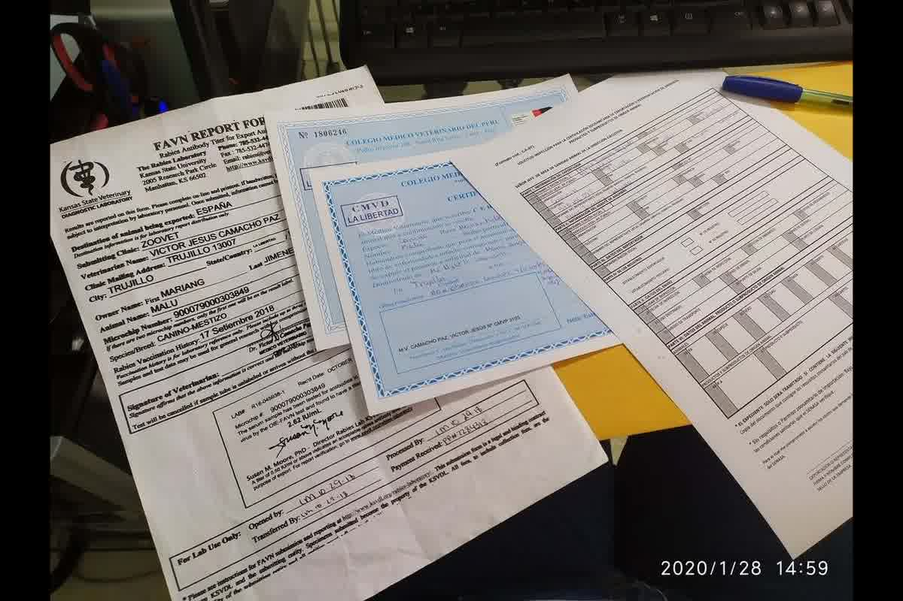
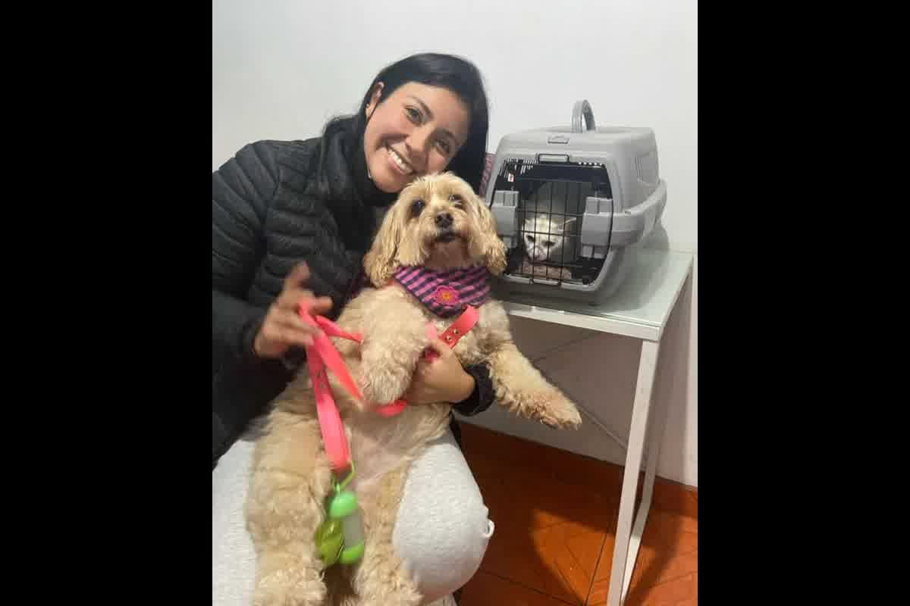

Guía técnica de la Dra. Jessica Camacho sobre las entidades y sedes oficiales para gestionar la exportación de mascotas en Trujillo, Perú.

La obtención del Certificado Zoosanitario de Exportación (CZE) en La Libertad no es un proceso automático que dependa de la voluntad del propietario, sino de la validación física de un inspector oficial de SENASA. Entender donde tramitar el certificado de viaje para mascotas en Trujillo evita que los tiempos de vigencia del examen clínico expiren antes de obtener el endoso final. En consulta, el error que más vemos es intentar gestionar documentos el mismo día del vuelo, ignorando que la autoridad sanitaria requiere plazos de revisión que no son negociables.
El trámite final de inspección y emisión del certificado se centraliza en la oficina de SENASA ubicada en el Complejo de Servicios en la Carretera Panamericana Norte. Es en esta sede donde se verifica la cadena documental que incluye el certificado de salud emitido por el veterinario colegiado y los registros de vacunación vigentes. Lo que la gente no anticipa es que el inspector debe realizar una lectura de microchip presencial; si el transpondedor no es detectable o no cumple con la norma ISO 11784/11785, el proceso se detiene de inmediato sin derecho a apelación.
La trazabilidad del documento depende de la correcta foliación de los certificados de salud privados que sirven como base para el sistema informático del Estado. En Trujillo, la oficina del terminal de carga del aeropuerto solo actúa como punto de verificación final, no como centro de emisión de expedientes nuevos, un detalle que causa pérdidas de vuelos cada semana.

Antes de acudir a la autoridad oficial, el animal debe haber pasado por un examen clínico exhaustivo realizado por un veterinario privado autorizado que certifique la ausencia de signos de enfermedades infectocontagiosas. Este examen tiene una validez que suele ser de máximo 10 días para la mayoría de destinos, pero puede reducirse a 48 horas si el país receptor así lo exige en sus requisitos específicos. La presentación del voucher de pago por derecho de trámite en el Banco de la Nación es obligatorio y debe coincidir con el código tributario correspondiente a la exportación de animales de compañía.
El propietario debe presentar el carnet de vacunación original, donde la vacuna antirrábica debe tener una vigencia mayor a 21 días y menor a un año desde su aplicación. Cualquier tachadura o enmienda en el documento físico será motivo de rechazo por parte del inspector de turno en Trujillo. La seguridad documental es la prioridad del Estado peruano para prevenir la exportación de zoonosis, por lo que la consistencia entre la fecha del microchip y la fecha de la vacunación es el primer punto de auditoría que realiza la oficina regional de La Libertad.
El papel del veterinario privado en este proceso es actuar como el primer filtro sanitario y gestor del expediente que llegará a manos del inspector oficial. En nuestra práctica clínica en Trujillo, realizamos la carga de datos en el sistema VUCE (Ventanilla Única de Comercio Exterior) para agilizar la revisión documental antes de la cita física. Este paso técnico reduce la probabilidad de errores tipográficos en el CZE, los cuales son extremadamente difíciles de corregir una vez que el documento ha sido impreso y sellado por la autoridad gubernamental.
La coordinación entre la clínica y SENASA asegura que el animal no sufra esperas prolongadas en las oficinas públicas, minimizando el estrés térmico y conductual del paciente. Un expediente bien armado en el sector privado fluye rápidamente a través de la burocracia estatal, mientras que una carpeta con vacíos informativos termina en una orden de re-inspección o en la denegación del viaje. La eficiencia en saber dónde tramitar el certificado de viaje para mascotas en Trujillo radica en preparar toda la base médica semanas antes de la fecha límite de embarque.
La verificación de los requisitos de importación del país de destino debe realizarse antes de programar cualquier cita en las oficinas de Trujillo o Lima. Esto cambió en agosto de 2024 para ciertos destinos internacionales sin aviso previo, por lo que basarse en experiencias de viajeros de años anteriores es un riesgo crítico. En Zoovet Travel, realizamos una auditoría de la ficha técnica de destino para confirmar si se requiere un período de cuarentena domiciliaria o pruebas de laboratorio adicionales antes de emitir el certificado de salud local.
El pago de las tasas correspondientes debe hacerse con el nombre exacto del propietario que figura en el boleto de avión para evitar discrepancias en la titularidad del CZE. Las oficinas de SENASA en Trujillo operan en horarios administrativos estrictos y no realizan inspecciones fuera de su jurisdicción sin una programación previa debidamente sustentada. La logística del traslado hacia la sede de inspección debe considerar la temperatura ambiental de Trujillo, evitando las horas de mayor radiación solar para no alterar los parámetros fisiológicos del animal durante la revisión del inspector.
La digitalización de los documentos es ahora una exigencia que complementa al expediente físico para la trazabilidad internacional de la mascota. Guardar copias legibles de los resultados de serología, si el destino las pide, y de los certificados de desparasitación interna y externa asegura una respuesta rápida ante cualquier consulta en las escalas de vuelo. Saber dónde tramitar el certificado de viaje para mascotas en Trujillo es solo el inicio; la ejecución técnica del proceso es lo que garantiza que su mascota cruce la frontera sin contratiempos sanitarios.
Un error en la gestión del certificado zoosanitario resultará en la inmovilización de su mascota en aduanas y la pérdida total de su inversión logística. En Zoovet Travel, llevamos 12 años exportando mascotas con éxito a nivel nacional e internacional, gestionando cada expediente con rigor clínico desde nuestra sede en El Recreo, Trujillo. No deje la seguridad de su compañero en manos de suposiciones de internet.